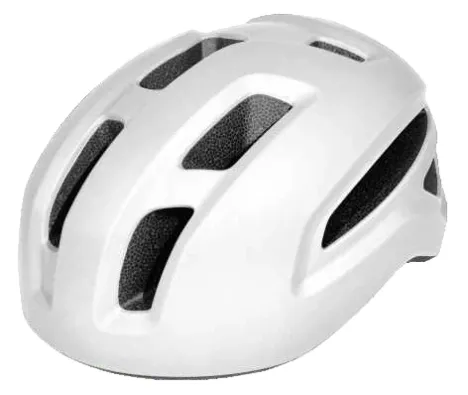

A bicycle-helmet product photo from Taotao's existing website assets. It is product context, not evidence of certification or test coverage for any specific model.
A supplier sends a polished bicycle-helmet photo and says the model is “CPSC certified.” Before you approve production, can you connect that claim to the exact helmet you will buy—and to the production lot you will receive?
The U.S. Consumer Product Safety Commission (CPSC) says its bicycle-helmet rule is in 16 CFR part 1203. Its business guidance defines a bicycle helmet partly by how it is marketed; a multi-purpose helmet may still fall under the rule if a reasonable consumer would understand it to be for bicycling. The purchase order, product listing, packaging and instructions therefore belong in the same review as the physical sample.
The three-way match to request
| Your order | Supplier evidence | What to compare |
|---|---|---|
| Model, size and configuration | Model and size identified in test and certification records | Does the document identify the version you intend to import, including offered attachments? |
| Intended U.S. marketing and user age | Draft product description, package and instructions | Is it marketed for bicycling? Is it intended primarily for children 12 or younger? |
| Planned production lots | Draft helmet label and lot/date identification method | Could a buyer trace a shipped unit to its production lot and month/year of manufacture? |
This is Taotao's buyer worksheet, not a CPSC form or a substitute for the required certificate. Ask for redacted documents where another customer's details are present.
Why the label and lot matter
CPSC says each bicycle helmet must carry a label certifying compliance with the standard. The label must include the responsible company's contact information, the foreign manufacturer's name and address when applicable, and information identifying the production lot plus the month and year of manufacture. A photograph of a generic “CPSC” sticker cannot establish that those details match your order.
Ask the supplier for a proposed label for your brand and configuration, a sample test-record index and an explanation of how finished cartons will map to helmet lot identifiers. Compare those against the purchase specification, not just the sample's appearance.
Adult and children's products need separate review
The certificate route depends on the product. CPSC explains that children's products—designed or intended primarily for children 12 or younger—can require a Children's Product Certificate (CPC) supported by tests from a CPSC-accepted laboratory. It also describes a separate General Certificate of Conformity (GCC) route for applicable general-use products. Do not ask a supplier for “the CPSC certificate” without first defining intended user and market.
For a children's product, the U.S. importer should confirm the applicable rules and verify the lab through the CPSC-accepted laboratory directory. The directory is a lab-scope check, not verification of a particular helmet or test report.
Red flags and limitations
- The marketing says “bicycle helmet,” while the supplier discusses a different sport-only configuration.
- A report names a different model, size, attachment or production version; no written explanation resolves the mismatch.
- The proposed label lacks a usable lot or manufacture-date identification method.
- The supplier shows a certificate image but cannot provide the underlying record set for the exact order.
- A child's size is offered without a clear intended-age decision and applicable certificate plan.
Continue / Pause / Escalate
Continue when the order, marketing, proposed label, lot method and records point to the same configuration, and the U.S. importer has confirmed the applicable certificate route. Pause for a missing document or unexplained mismatch. Escalate a children's-product, accessory or conflicting-scope question to a qualified U.S. product-compliance adviser before you approve production.
Official references
- CPSC: Bicycle Helmets Business Guidance
- CPSC: Children's Product Certificate
- CPSC: General-Use Products Certification and Testing
- CPSC: Accepted Testing Laboratories